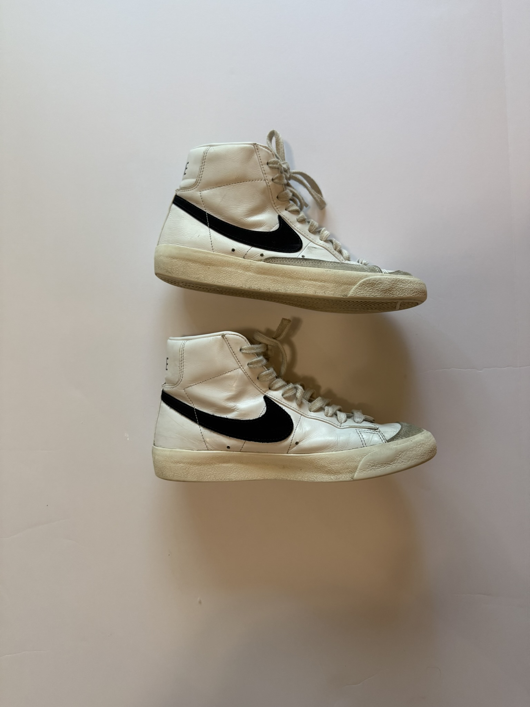
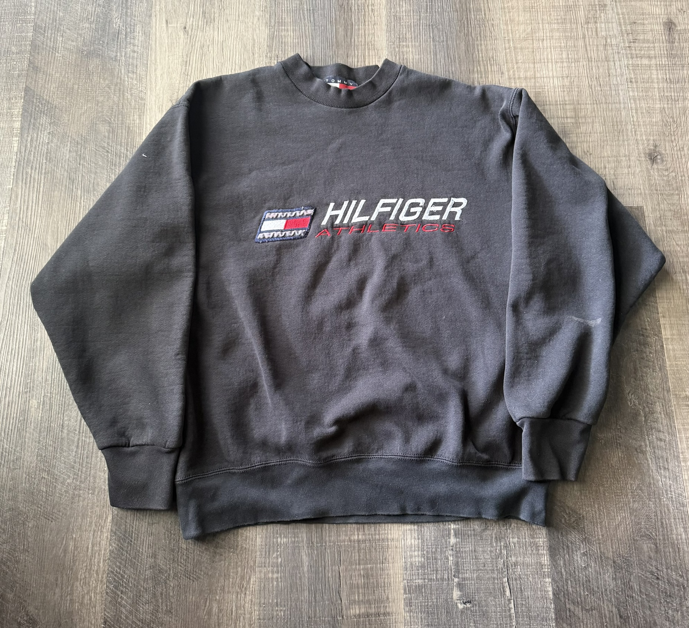

Marketing & Finance — Olivet Nazarene University
Landon Anderson markets like a strategist and measures like an analyst.
Independent resale operator, IRS-certified tax preparer, and builder of AI-assisted workflows — currently turning that into a career in brand marketing.
resale business
IRS VITA volunteer
Emerging Media
About
Marketing student building hands-on brand and e-commerce experience through an independently operated resale business and self-directed AI workflow systems.
Brings a media production background — audio/video production, on-air content — and applies data-informed decision-making to marketing execution, design, and business operations. Currently developing this site alongside an expanding double major in Finance, with an Accounting minor already completed.
Projects
Independent resale operation on Depop (@lcanderson13) — sourcing, photography, pricing, and a relisting strategy built from testing, not guesswork.
- 50+ items sold to date, 5-star rating across 7 reviews, 19 listings currently active.
- Relisting strategy: boost after ~3 days of inactivity, consistently producing a sale within 2 days of boosting.
- Improved conversion through iterative product photography — multi-angle shots, lighting/exposure correction, cropping.


A reusable, role-based AI prompt library for listing SEO, copywriting, and business planning — plus AI-assisted Notion systems for automating day-to-day operations.
- Prompt library spans ChatGPT, Claude, Copilot, and Gemini, organized by role and task rather than one-off prompts.
- Notion systems designed to automate recurring resale and school operations.
Four years in a state-recognized radio & TV production program — hosting, producing, and building a station social presence.
- Hosted a solo, music-focused weekly radio show for one year; co-hosted a hyperlocal news program for two years.
- Produced roughly 10 podcast episodes and station ad spots using Adobe Audition.
- Contributed to short-film production — lighting, filming, basic editing.
- Program recognized as Best in Indiana for Emerging Media (2022) by the Indiana Broadcasters Association.
Resume
Full experience, education, and certifications — including IRS VITA certification, Microsoft Office Specialist credentials, and Investment Club involvement.
Download résumé (PDF)Contact
Open to marketing internship conversations for 2027.
lcanderson1306@gmail.com